KV cache, memory hierarchy, autoregression—and how to predict the limiter before profiling.
The stove is ready. The ingredients are not.
A GPU can have abundant arithmetic and still wait for bytes. The first task is to name which bytes, from where, and how often.
Same decoder, two different waits
Constructed workload contrast
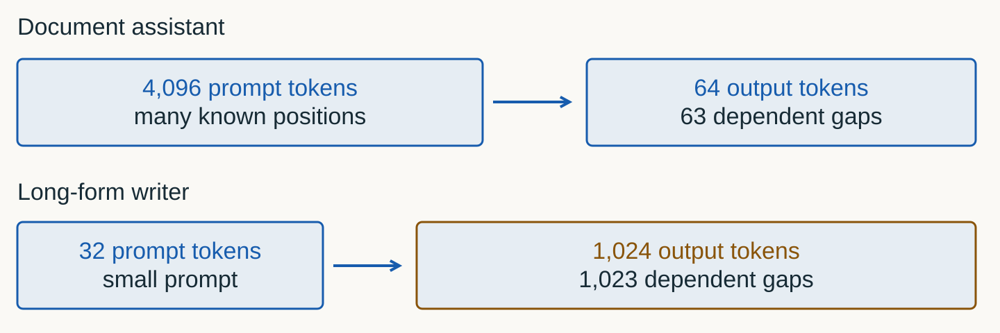
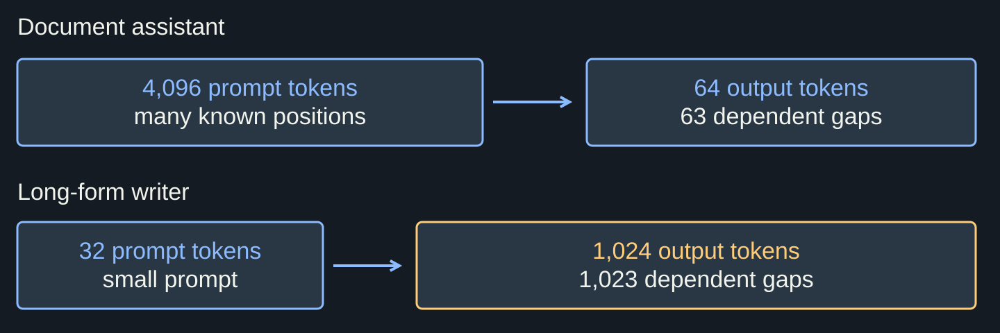
Constructed workload contrast. Boxes encode workload shape, not measured duration. TTFT or TPOT alone cannot identify a kernel bottleneck.
“Slow GPU” names no mechanism
Five competing hypotheses
Limiter
Constrained quantity
Discriminating evidence
compute
operations/s
kernel near compute roof
bandwidth
bytes/s
kernel near memory roof
capacity
resident bytes
allocation failure / eviction
launch / shape
useful parallel work
gaps, tiny kernels, low occupancy
queueing
admitted demand
device fast; request waits outside
A percentage is not a diagnosis
What does “GPU 99%” mean?
Common inference
“Utilization is high, therefore compute is saturated.”
A busy interval may contain memory stalls, tiny kernels, late work, or alternating phases. Diagnose with operations, bytes, shapes, timelines, and counters.
Operations · bytes moved · live bytes · elapsed time
Operations and traffic predict rate ceilings; live bytes predict fit; elapsed time tells whether the chosen interval includes queueing, transfers, or asynchronous work.
By the end, you can predict and falsify
Observable outcomes
01
Trace one decoder step and separate the serial token axis from parallel work inside it.
02
Derive weight traffic, arithmetic intensity, ridge point, and KV bytes per token.
03
Predict how prompt, output, batch, GQA, and dtype move the active constraint.
04
Choose wall clock, PyTorch profiler, Nsight Systems, or Nsight Compute for the question.
“
A bottleneck is a relationship between a workload, an implementation, and a machine—not a permanent property of a model.
Lecture thesis
01
Trace one token
Autoregression is serial across generated tokens—not inside the whole GPU.
Text becomes integer IDs before the GPU
Illustrative data boundary
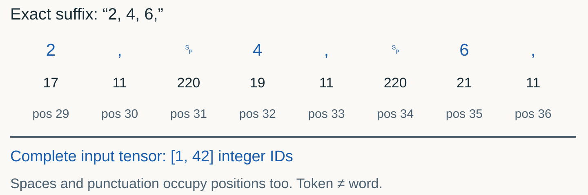
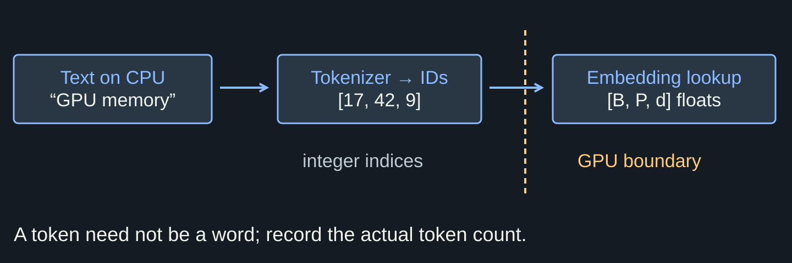
Illustrative data boundary. The IDs below are invented, not the Qwen encoding of this text. Tokenization and host transfer are outside the lab phase timer.
Conceptual layouts; kernels can pack or transpose tensors. GQA sharing does not make Q and KV identical.
Known positions can be computed together
Illustrative causal mask
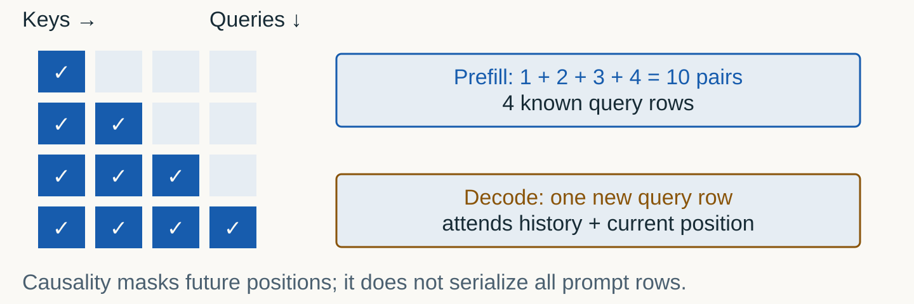
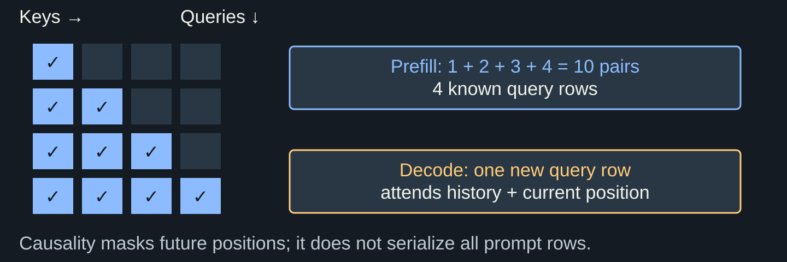
Illustrative causal mask. The grid describes mathematical dependencies, not an instruction to allocate a full score tensor in device memory. Source / method.
Mtoken rowsB × prompt/chunk length for prefill; B for decode
d / doutvalues / rowInput and output widths of the projection
B=8 and P=512 → prefill M=4,096; the next decode step has M=8.
Retained context length is not M in decode. The query is new; K/V history can be long.
One weight tile, several token rows
Illustrative reuse mechanism
Illustrative reuse mechanism. Idealized reuse is not guaranteed HBM traffic. Caches, tiling, shapes and other tensors determine realized intensity. Source / method.
Flatten token rows; watch M collapse
Worked tensor shapes
Worked tensor shapes. M counts positions processed now, not all retained KV positions. Hidden widths are omitted from the drawing, not from the operation.
Nw × bwbytesDense weights × bytes per stored weight
BWbytes / secondBandwidth at the declared memory boundary
3×10⁹ weights × 2 B ÷ 600×10⁹ B/s = 0.010 s = 10 ms per weight sweep.
Hypothetical 600 GB/s, full streaming assumption. Cache reuse changes traffic; other work can add time.
The shortcut predicts scale—not a trace
What (2P) omits
Bad conclusion
“The model is 3B, therefore every token costs exactly 6 GFLOP.”
Attention depends on context; embeddings may be tied; MoE activates subsets; kernels add elementwise work; implementations fuse and count operations differently.
Change the phase; watch the matrix dimension collapse
Interactive shape explorer
Phase
new queries
attention scores
projection family
active phase
interpretation
shape changes reuse
A long kernel can interrupt a token stream
Constructed single-device timeline
Constructed single-device timeline. Illustrative serial schedule, not a measured trace. Chunking/scheduling choices return in Topic 05; faster prefill alone is not a fairness policy.
Predict the first-order sensitivity
Before measurement
Change
Prefill pressure
Decode pressure
longer prompt
more new-token work + attention
larger history / KV reads
longer output
unchanged initial prompt
more serial steps + growing history
larger live batch
more token rows
more weight reuse + live KV
fewer KV heads
smaller K/V projections/state
less cache capacity and traffic
03
Follow the bytes
Capacity tells whether data fits. Bandwidth and reuse tell how fast it feeds compute.
Bytes cross different physical boundaries
Logical memory path
Logical memory path. HBM versus GDDR depends on the GPU. Shared memory/L1 organization is architecture-dependent; this map is not a strict mandatory serial route. Source / method.
Three memory failures need three tests
Diagnostic map
Diagnostic map. An OOM does not prove bandwidth saturation; high free memory does not prove fast access. Choose evidence for the mechanism. Source / method.
Tensor role predicts desired placement
But software does not control every hit
Long-lived
weights: device memory, reused by kernels
KV cache: device memory, grows per request
allocator pools: reserved for reuse
Short-lived / tiled
activations and workspace
L2-resident reused lines when lucky
shared-memory tiles and registers
Reuse is the bridge from bytes to operations
The performance lever
DATA REUSE
Perform more useful operations before the same data must be fetched again from a slower memory level.
Batching reuses weights across token rows; tiling reuses blocks on chip; fusion keeps intermediate values closer to compute.
Useful bytes and transferred bytes can differ
Illustrative access pattern
Illustrative access pattern. Segments are schematic, not a claim of a universal CUDA transaction size. Alignment, element width and cache state matter. Source / method.
Fusion removes intermediate memory trips
Worked traffic accounting
Worked traffic accounting. For 1 Mi elements at 2 bytes each: 12 MiB versus 4 MiB idealized payload. This is not a guaranteed threefold wall-time speedup. Source / method.
Keep attention intermediates close to compute
Algorithmic IO sketch
Algorithmic IO sketch. Exact attention with floating-point rounding differences; logical persistent KV and the output-token dependency still remain. Source / method.
Less attention IO does not erase generation physics
Scope the optimization
Overclaim
“FlashAttention solves long-context inference.”
Autoregressive steps remain serial; KV state still grows; decode still reads history; weights, MLPs, capacity, and scheduling remain.
Illustrative roofs, not RTX specifications. A ceiling is not a promise; launch gaps and capacity are absent.
The ridge is where the active ceiling changes
Units → example → limits
$$I^*=\frac{P_{\mathrm{compute}}}{BW}$$
I*FLOP / byteIntensity where the two roofs intersect
Pcompute / BWmatched rate unitsUse the same precision and memory boundary
60×10¹² FLOP/s ÷ 600×10⁹ B/s = 100 FLOP/B; I=20 is left of this ridge.
Changing precision may move both the workload point and the compute roof. Do not compare unlike modes.
Move the workload point across the ridge
Interactive upper bound
Machine
60 TFLOP/s · 600 GB/s
Ridge
Change reuse, batch, precision, or tiling only if the implementation truly changes operations or bytes.
Ceiling
Regime
Intensity
A roof bounds rate; it does not promise it
Illustrative machine model
Illustrative machine model. Use matching precision and one declared memory boundary. Values describe a hypothetical machine, not the RTX 5070 Ti specification. Source / method.
An ideal weight-reuse model, not linear speedup. KV traffic, capacity and latency also increase.
Batching changes both numerator and denominator
Worked batch accounting
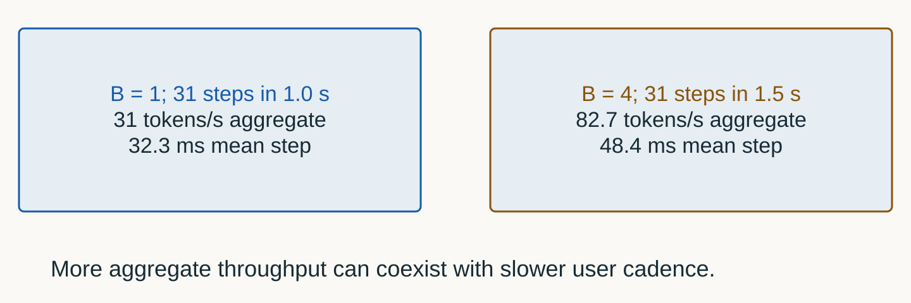
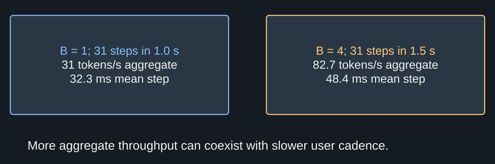
Worked batch accounting. Constructed timings, not a measured speedup. Static identical-row batching in the lab does not model arrivals or queueing.
HBM is not the only traffic boundary
Hierarchical roofline
Boundary
Question
Possible evidence
device memory
are HBM/GDDR bytes limiting?
DRAM throughput and intensity
L2
is reuse captured on chip?
L2 hit/traffic counters
shared/L1
are tiles reused efficiently?
bank conflicts / local traffic
registers
does pressure reduce occupancy?
register count and spills
A memory-bound kernel can keep the GPU “busy”
Activity is not issue efficiency
Dashboard myth
“Memory-bound means low GPU utilization.”
Kernels may be continuously active while arithmetic pipelines wait on data. Use achieved bandwidth, compute throughput, stalls, and roof proximity.
Below both roofs: separate kernels from gaps
Constructed 100 ms interval
Constructed 100 ms interval. A low achieved rate can reflect insufficient parallelism, dependencies, launch gaps or the wrong roof—not just bad arithmetic code. Source / method.
Run the entire prefix (x_{1:t}) again to reconstruct every layer's keys and values.
Across T steps
Earlier positions are projected repeatedly even though their token identities do not change.
Reuse history; append one position
KV lifecycle · step with →
prompt
layer ℓ
KV cache
next token
prefill positionsS tokens
store K,Vall layers
read historydecode
append K,V + sample+1 position
Per layer
prefillwrite S
decoderead history
appendwrite 1
Derive cache bytes from model structure
Units → example → limits
$$K_{\mathrm{token}}=2L H_{kv}d_hb$$
2LK/V arrays × layersTwo stored vectors in each decoder layer
Hkv × dhvalues / vectorKV heads, not query heads
bbytes / valueActual KV-cache element precision
2 × 36 × 2 × 128 × 2 B = 36,864 B/token = 36 KiB/token for pinned Qwen2.5-3B.
Logical payload only. Does not include weights, block rounding, workspace or allocator pools.
Query heads are not stored KV heads
Worked GQA structure
Worked GQA structure. Sharing K/V changes stored width. Replacing two KV heads with sixteen is a storage counterfactual, not a quality-equivalent model conversion. Source / method.
16 / 2KV-head ratioChange only the stored-head count in this calculation
1.6875 GiBlogical payloadSame 49,152 token positions at two KV heads
Per-token payload rises from 36 to 288 KiB. Eight times the KV heads means eight times these bytes.
Storage counterfactual, not an equally accurate model. It still excludes weights and runtime overhead.
Admission must budget tokens—not requests
Interactive KV capacity
2 × 36 layers × Hkv × 128 × bytes
Logical KV payload against an illustrative 8 GiB budget.
Per token
Live tokens
KV payload
Budget result
What stays resident is not what is read per second
Illustrative KV lifecycle
Illustrative KV lifecycle. A logical history-access count is not measured HBM traffic. The selected token has no cache entry until the next forward pass.
Includes each current query position. Multiply by heads/layers for broader work; not measured HBM bytes.
Do not add allocated bytes to reserved bytes
Illustrative allocator nesting
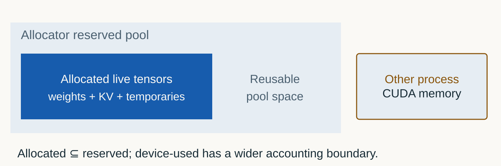
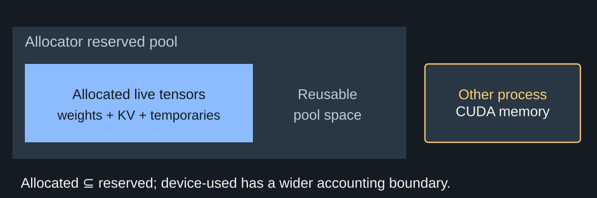
Illustrative allocator nesting. Peak allocated/reserved are in-process counters. A between-cell nvidia-smi sample can miss the peak and includes a different boundary.
Identical prefixes can share work—not all state
Illustrative prefix ownership
Illustrative prefix ownership. This is the ownership question; cache-key design and block implementation belong to later engine topics. Similar text is not necessarily identical token state.
Four tickets can be larger than forty
A request-count limit treats a 32-token completion and a 32k-token context as equals. The allocator cannot.
Fit the workload before launching it
Capacity checklist
Input
Evidence source
Do not guess from
layers, Q/KV heads, head dimension
pinned model config
parameter count alone
cache dtype
runtime configuration
weight dtype
live token distribution
workload + scheduler state
request count
usable budget
measured post-load headroom
device total VRAM
06
Profile in layers
User clock first. Timeline second. Kernel counters only when the question demands them.
Choose the instrument from the question
Four layers of evidence
Instrument
Best question
Blind spot
wall clock / request trace
what did the user wait for?
kernel mechanism
CUDA events
how long was this device interval?
not kernel attribution; no HTTP queue
system timeline
where are launches, copies, gaps, overlap?
deep kernel counters
kernel profiler
why is this kernel below a roof?
unprofiled end-to-end context
A CPU launch can finish before device work does
Constructed asynchronous timeline
Constructed asynchronous timeline. Event intervals can include idle time while Python launches later kernels. Do not label them summed CUDA kernel time. Source / method.
fixed shapes, token counts, dtype, seeds, API path
comparison
04
Repeat
trial distribution, not one fastest observation
variability
`torch.profiler` bridges operators and CUDA activity
Framework-level attribution
Collect deliberately
Python
with profile( activities=[CPU, CUDA], record_shapes=True, profile_memory=True, ) as prof: measured_step()
Inspect
operator self/total CPU and CUDA time
input shapes
memory allocations
Chrome trace export
A timeline and a kernel counter answer different questions
Evidence-to-instrument map
Evidence-to-instrument map. Do not infer HBM saturation from an operator name or a GPU-utilization percentage. Profile the shape and phase that produced the symptom. Source / method.
Instrumentation changes the thing observed
Control the observer effect
01
Baseline run
uninstrumented latency and throughput distribution
product truth
02
Focused capture
few warm iterations inside an explicit range
mechanism
03
Re-run baseline
verify the proposed change without profiler overhead
recompute logical budget and capture allocation timeline
memory
Optimize the share of wall time, not a table rank
Worked Amdahl example
Worked Amdahl example. Assumes unchanged other work and no overlap. A 3% time reduction is a 100/97−1 = 3.09% throughput speedup for serial repetitions.
A bounded experiment has a stopping rule
Illustrative measurement workflow
Illustrative measurement workflow. Stop on resource growth, errors or missed safety limits. A successful one-request lab does not authorize a broad unattended load sweep.
07
Reconcile evidence
The seminar starts with a prediction and ends with an explained disagreement.
One required protocol across slides, Book and lab
Executable lab protocol v2
Executable lab protocol v2. B1/128/32 is the matched control for B4. Output 512 and B8 are optional extensions. Every core trial is checkpointed; partial is not complete. Source / method.
The historical phase puzzle remains visible
Measured protocol-v1 medians
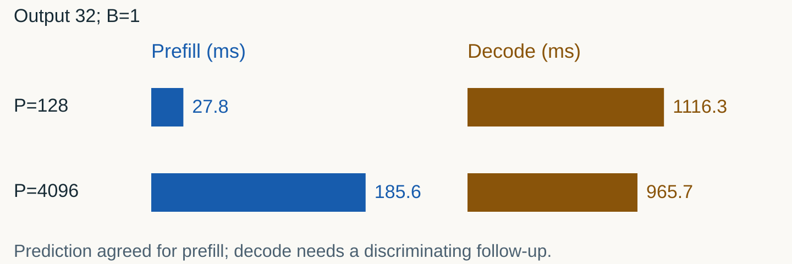
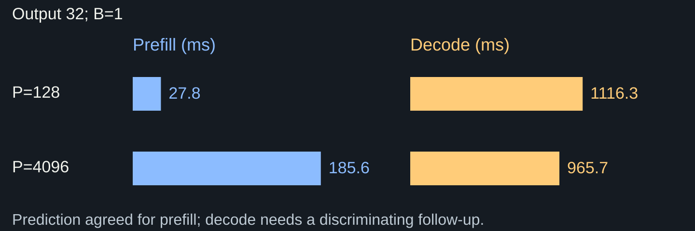
Measured protocol-v1 medians. Five trials per shape. Historical v1 used different warmup/logit handling; do not compare its timings with v2 as a controlled speedup. Source / method.
The measured disagreement is the lesson
Prediction → observation → next test
01
Prediction
32× input at fixed 32 output: prefill should grow
before run
02
Observation
prefill 27.8 → 185.6 ms; decode 1116.3 → 965.7 ms
5 trials
03
Do not overfit
the lower decode median is not proof that longer prompts speed decode
limit
04
Discriminating test
interleave more trials; inspect device timeline and shape-specific kernels
next
Batch four raises aggregate rate in this run
Measured v2 · 1.5B · RTX 5070 Ti
Measured v2 · 1.5B · RTX 5070 Ti. Dot = median; segment = min–max of five trials. Per-sequence cadence ranges overlap. Preserve variation; do not generalize the median ratio. Raw evidence / method.
Kernel events occupy only part of the profiled span
Measured v2 · focused 0.5B traces
Measured v2 · focused 0.5B traces. Stacked totals summarize durations, not event order. Copies/other categories are excluded. Profiling adds overhead; do not apply these shares to unprofiled service latency. Raw evidence / method.
The payoff
Do not optimize the component with the loudest dashboard. Predict the active constraint, measure the right boundary, and explain what disagreed.
Name the phase, calculate one ceiling, and choose the observation that could falsify it. Next: change the bytes with quantization—without losing sight of quality.